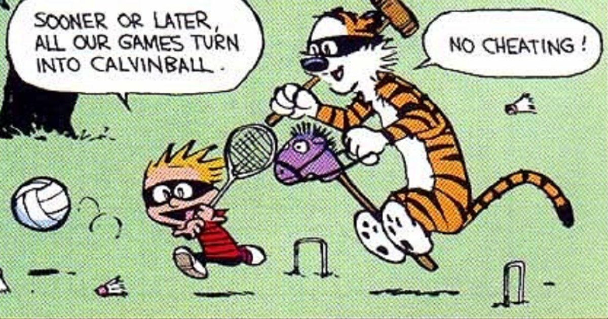

Oefeningen subqueries
De Tennisvereniging

Algemene informatie
Algemene info over dit database schema kan je hier vinden.

SUBQUERIES (H5)
Oefening 1
Geef van elke speler waarvan het nummer kleiner is dan 60 het aantal jaren dat ligt tussen het jaar van toetreding van die speler en dan van speler 100.
SELECT spelersnr, jaartoe -
(SELECT jaartoe
from spelers
where spelersnr = 100)
FROM spelers
where spelersnr < 60
Oefening 2
Geef de nummers van de spelers die in hetzelfde jaar geboren zijn als speler 27
SELECT spelersnr
FROM spelers
WHERE YEAR(geb_datum) =
(select YEAR(geb_datum)
from spelers
where spelersnr = 27)
Oefening 3
DOORDENKER: Geef de nummers van de spelers die hetzelfde geslacht hebben en in dezelfde plaats wonen als speler 100.
SELECT spelersnr
from spelers
where (geslacht, plaats) = (select geslacht, plaats
from spelers
where spelersnr = 100)
Oefening 4
Geef de nummers van de teams waarvan de speler met naam Permentier en voorletter R aanvoerder is; we gaan er in deze opgave van uit dat er geen twee spelers zijn met dezelfde naam en voorletters.
SELECT teamnr
FROM teams
WHERE spelersnr =
(select spelersnr
from spelers
where naam = ‘Permentier’
and voorletters = ‘R’)
Oefening 5
DOORDOORDENKER: Geef de naam van de speler die aanvoerder is van het team waartoe wedstrijd 6 behoort.
SELECT naam
FROM spelers
WHERE spelersnr =
(select spelersnr
from teams
where teamnr =
(select teamnr
from wedstrijden
where wedstrijdnr = 6))
Oefening 6
Geef de nummers van de boetes die hoger zijn dan de boete met betalingsnr 4
SELECT betalingsnr FROM boetes WHERE bedrag > (SELECT bedrag FROM boetes WHERE betalingsnr = 4)
Oefening 7
Geef de nummers van de spelers die op dezelfde weekdag zijn geboren als speler 2
SELECT spelersnr FROM spelers WHERE DAYNAME(geb_datum) = (select DAYNAME(geb_datum) FROM SPELERS WHERE spelersnr = 2)
Oefening 8
DOORDENKER:Geef de nummers van de bestuursleden die een functie zijn begonnen en diezelfde functie weer hebben neergelegd op dezelfde datums als waarop speler 8 de functie van penningmeester heeft geaccepteerd en weer heeft neergelegd. Speler 8 mag zelf niet in het eindresultaat voorkomen.
SELECT spelersnr FROM bestuursleden WHERE (begin_datum,eind_datum) = (select begin_datum,eind_datum from bestuursleden where spelersnr = 8 and functie = ‘Penningmeester’) AND spelersnr <> 8
Oefening 9
Geef de divisies van teams 1 en 2 en plaats deze naast elkaar in het resultaat
SELECT (select divisie from teams where teamnr = 1),(select divisie from teams where teamnr = 2)
Oefening 10
Geef de nummers van de wedstrijden gespeeld door spelers die in Rijswijk wonen. Probeer met een subquery
select wedstrijdnr from wedstrijden w inner join spelers s on w.spelersnr=s.spelersnr where s.plaats = ‘Rijswijk’
OF
select wedstrijdnr
from wedstrijden
where ‘Rijswijk’ =
(select plaats
from spelers
where spelers.spelersnr = wedstrijden.spelersnr)
Oefening 11
Geef de wedstrijdnummers, spelersnummers en de teamnummers van alle wedstrijden gespeeld door een speler die tevens de aanvoerder van dat team is. Probeer met een subquery
–SELECT wedstrijdnr,spelersnr,teamnr –FROM wedstrijden w –WHERE spelersnr IN (select spelersnr from teams WHERE wedstrijden.teamnr = teams.teamnr )
SELECT w.wedstrijdnr, t.spelersnr AS t_spelersnr, w.spelersnr AS w_spelersnr, t.teamnr AS t_teamnr, w.teamnr AS w_teamnr FROM wedstrijden w INNER JOIN teams t ON(w.spelersnr = t.spelersnr AND w.teamnr = t.teamnr)
Oefening 12
Geef de nummers en de naam van de aanvoerders voor wie minstens twee boetes zijn betaald.
–SELECT s.spelersnr, s.naam –FROM spelers s INNER JOIN teams t ON (s.spelersnr = t.spelersnr) –WHERE s.spelersnr IN –(SELECT b.spelersnr –FROM boetes b –GROUP BY b.spelersnr –HAVING count(betalingsnr)>=2);
SELECT s.spelersnr, s.naam, COUNT(betalingsnr) AS aantal_boetes FROM spelers s INNER JOIN boetes b ON (s.spelersnr = b.spelersnr) INNER JOIN teams t ON (s.spelersnr = t.spelersnr) GROUP BY s.spelersnr HAVING COUNT(betalingsnr)>=2
Oefening 13
TENNIS: Zelf een oefening verzinnen en opdracht geven naar collega’s
Oefening 14
HR: Zelf een oefening verzinnen en opdracht geven naar collega’s